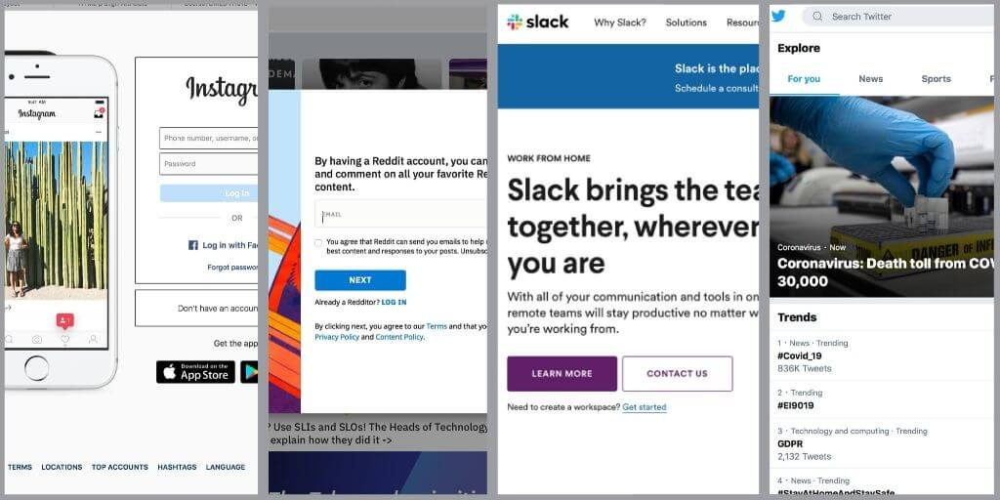

Welcome to the world of the 21st century, now a days everything connects to the internet, sure even fridges can connect to Wi-Fi, services that we used to use manual have now moved online such as online banking which can be seen as an easier form of banking for some. The internet is growing and the devices that surround the interest are only getting more technical and harder to use. So you either have to stay in the past, or learn the new ways to progress to the future. In this website I will be showing you how to use the most popular social media networks that are out there today, I will show you everything from how to download them to how to perform tasks on them. Also as I know from being a student that education and social media can go hand and hand if used in the right way. So I will show you how to use these social media networks to teach students, and how to uses them if you are a student. This means that not only you as a lecturer can know how to use them for yourself, but you will also know how your students use them, this will give you a better understanding. So sit back and let me teach you the ropes.
